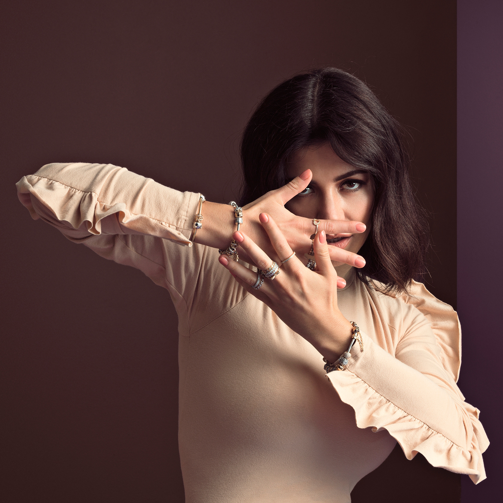

Marina

Froot

Electra Heart
Electra Heart

Family Jewels

Diamandis

Greek
Marina Lambrini Diamandis is a singer-songwriter with a fertile imagination and a low boredom threshold from Wales. She created the persona of Marina and the Diamonds partly as a pun on her surname, but also with the logic that the real Diamonds aren’t her band, they’re her fans. Having set herself the challenge of writing and recording music using a laptop and some free software, the 22-year-old Marina then distributed her songs via MySpace in 2007, and they proved popular enough to secure her a record deal. She released her first single Obsessions in 2009, following it swiftly with The Crown Jewels EP and debut appearance at BBC Radio 1’s Big Weekend, where she played on the BBC Introducing stage. She also made her debut at Glastonbury and Reading and Leeds that year. She took the runner-up position to Ellie Goulding in both the BBC’s Sound of 2010 poll and the Critic’s Choice prize at the 2010 Brit Awards, then released the single Hollywood about American obsessions with how things appear. Her debut album, The Family Jewels, was released on 15 February 2010, followed by a tour with Katy Perry and a Live Lounge appearance in which she covered Magnetic Man’s Perfect Stranger. In 2012 she released Primadonna, her highest charting single to date, as the opening salvo in Electra Heart, her concept album about female identity that saw Marina dye her hair platinum blonde and play with female stereotypes. The album went straight to No.1 and Marina celebrated by covering Justin Bieber’s Boyfriend in the Live Lounge. Her third album Froot was her most successful to date, breaking the US Top 10 and leading to an invite to Lollapalooza Brazil and Coachella as part of her Neon Nature tour.